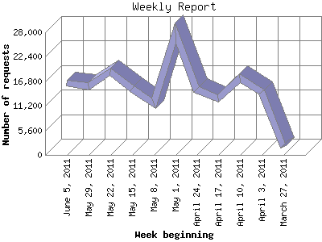

The Weekly Report identifies the activity for each week within the report
time frame. Remember that one page hit can result in several server requests
as the images for each page are loaded.
Note: Depending on the
report time frame for this report the first and last week may not represent
a full seven day week, resulting in lower hits.

| Week beginning | Number of requests | Number of page requests | |
|---|---|---|---|
| 1. | March 27, 2011 | 1,849 | 164 |
| 2. | April 3, 2011 | 14,309 | 977 |
| 3. | April 10, 2011 | 17,409 | 1,042 |
| 4. | April 17, 2011 | 12,850 | 859 |
| 5. | April 24, 2011 | 14,911 | 909 |
| 6. | May 1, 2011 | 27,732 | 1,466 |
| 7. | May 8, 2011 | 11,872 | 778 |
| 8. | May 15, 2011 | 15,188 | 1,032 |
| 9. | May 22, 2011 | 18,933 | 1,098 |
| 10. | May 29, 2011 | 15,621 | 774 |
| 11. | June 5, 2011 | 16,480 | 947 |
Most active week beginning May 1, 2011 : 1,466 pages sent. 27,732 requests handled.
Weekly average: 913 pages sent. 15,195 requests handled.
This report was generated on June 12, 2011 04:58.
Report time frame April 2, 2011 00:02 to June 11, 2011 23:57.
| Web statistics report produced by: analog 6.0 / Report Magic 2.21 |